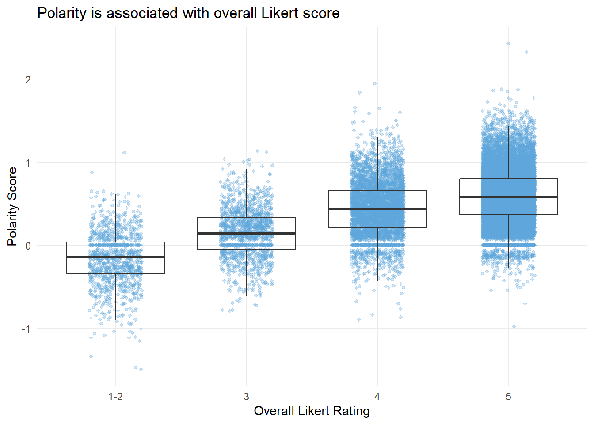
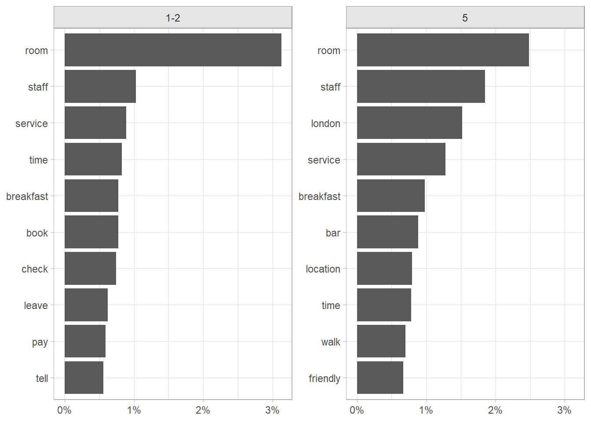
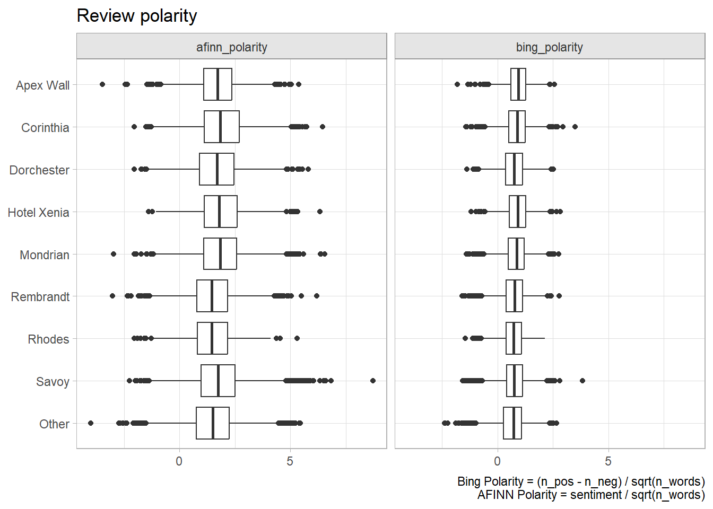

3.2 Polarity Scoring
Two packages measure text polarity. The simpler one tidytext: unnest tokens, join to the Bing lexicon, and calculate the net of positive minus negative polarity counts. sentimentr is more sophisticated in that it takes into account valence shifters, surrounding words that change the intensity of a sentiment (e.g., “very”) or switch its direction (e.g., “not”).4
tidytext
The tidytext way to score polarity is to tag words as “positive” and “negative” using the Bing lexicon, then calculate the difference in counts. The qdap and sentimentr packages correct for text length by dividing by \(\sqrt{n}\). It is useful to capture the positive and negative words back in the main data frame for explaining how the polarity score was calculated.
polarity_bing <-
token %>%
left_join(bing, by = "word", relationship = "many-to-one") %>%
summarize(.by = c(review_id, sentiment), n = n(), words = list(word)) %>%
pivot_wider(names_from = sentiment, values_from = c(n, words),
values_fill = list(n = 0)) %>%
select(-c(n_NA, words_NA)) %>%
inner_join(hotel_0 %>% select(review_id, word_cnt), by = "review_id") %>%
mutate(
polarity = (n_positive - n_negative) / sqrt(word_cnt),
polarity_desc = if_else(polarity >= 0, "Positive", "Negative")
)
polarity_bing %>% filter(review_id == 520)## # A tibble: 1 × 8
## review_id n_positive n_negative words_positive words_negative word_cnt
## <int> <int> <int> <list> <list> <int>
## 1 520 0 0 <NULL> <NULL> 47
## # ℹ 2 more variables: polarity <dbl>, polarity_desc <chr>polarity_afinn <-
token %>%
inner_join(afinn, by = "word", relationship = "many-to-one") %>%
summarize(.by = review_id, sentiment = sum(value), words = list(word)) %>%
inner_join(hotel_0 %>% select(review_id, word_cnt), by = "review_id") %>%
mutate(
polarity = sentiment / sqrt(word_cnt),
polarity_desc = if_else(polarity >= 0, "Positive", "Negative")
)
# Attach to main data frame
hotel_1 <-
hotel_0 %>%
left_join(polarity_bing %>%
select(review_id, polarity, words_positive, words_negative) %>%
rename_with(~paste0("bing_", .x)),
by = join_by(review_id == bing_review_id)) %>%
left_join(polarity_afinn %>%
select(review_id, polarity) %>%
rename_with(~paste0("afinn_", .x)),
by = join_by(review_id == afinn_review_id))Let’s see how the polarity scores compare.
hotel_1 %>%
pivot_longer(cols = c(bing_polarity, afinn_polarity),
names_to = "lexicon", values_to = "polarity") %>%
filter(!is.na(polarity)) %>%
ggplot(aes(x = polarity, y = fct_rev(property))) +
geom_boxplot() +
facet_wrap(facets = vars(lexicon)) +
labs(title = "Review polarity", x = NULL, y = NULL,
caption = glue::glue("Bing Polarity = (n_pos - n_neg) / sqrt(n_words)\n",
"AFINN Polarity = sentiment / sqrt(n_words)"))The two lexicons are similar. The data set includes a rating (1-5). I’ll stick with Bing going forward for convenience. The polarity score should correlate with the rating.
hotel_1 %>%
filter(!is.na(bing_polarity)) %>%
ggplot(aes(x = as_factor(rating), y = bing_polarity)) +
geom_jitter(width = 0.2, alpha = 0.3, color = "#5DA5DA", size = 1) +
geom_boxplot(alpha = 0) +
theme_minimal() +
labs(title = "Polarity is associated with overall Likert score",
x = "Overall Likert Rating", y = "Polarity Score")
Sentiment increases with Likert rating, but there are many reviews with a rating of 5 and a polarity score <0. In some cases this is because the reviewer interpreted the scale incorrectly. You can use polarity scores to identify problematic reviews like these.
hotel_1 %>%
mutate(
problematic = case_when(
(rating == "1-2" & bing_polarity > 0.5) ~ "Too Low",
(rating == "5" & bing_polarity < -.5) ~ "Too High",
TRUE ~ "Other"
)
) %>%
filter(problematic %in% c("Too High", "Too Low")) %>%
group_by(problematic) %>%
slice_max(order_by = abs(bing_polarity), n = 1) %>%
select(problematic, rating, bing_polarity, review) %>%
flextable::flextable() %>%
flextable::autofit() %>%
flextable::valign(valign = "top")problematic | rating | bing_polarity | review |
|---|---|---|---|
Too High | 5 | -0.9801961 | Some design faults in the bathroom - no stool, misplaced grab handles and vanity mirror. Very disappointing experience in Savoy Grill. Good quality ingredients but poorly presented and tasteless. Numerous mistakes in service including charging for expensive drinks which we did not have. Service charge revoked and booking for following night cancelled. |
Too Low | 1-2 | 1.1152378 | Having stayed at several Morgans Hotels on both sides of the pond, I was really looking forward to checking in to the Mondrian London. I have to say I was bitterly disappointed and left questioning whether this hotel was actually a Morgans property. Normally the second you step into any Morgans property, you instantly know youre in a Morgans Hotel. They always have the wow factor & the dcor has such a quirky, distinctive style, and the service is always exemplary without being stuffy. The same cannot be said about Mondrian London- we could have been in any generic high-end hotel in the world, and some of the staff behaviour we witnessed was highly sub-standard. The room was nice, but nice is not a word I would normally use to describe a Morgans room- its usually amazing, iconic, incredible. It was stylish but had no soul & dcor wise we could have been in a room in any hotel in the world. However the view of the Thames & St Pauls was fantastic and was a redemptive feature & the large marble bathroom, which is synonymous with Morgans was amazing & without doubt the highlight of the room. The bed was enormous, but was so hard it was like sleeping on breeze blocks- possibly one of the worst nights sleep Ive ever had- had to get up in the night & go & sleep on the couch- not really what you expect from a 500 room. We had aperitifs in the Dandelyan bar- again the dcor is completely unremarkable- nothing special when compared to the likes of the groups other bars, but was comfortable enough. We had really high hopes for this bar, as it is apparently run by an award winning mixologist, so we couldnt wait to sample to cocktails- and wait we did- while we pored over the enormous, incomprehensible menu. It was more like a botanical reference book than a cocktail menu- gargantuan in size and too wordy with no comprehensible flow. People know what they like to drink- either in terms of the spirit base of their cocktail (vodka, rum, gin, whiskey), or the type of drink they prefer (martini, flute, long etc..), therefore it is a sensible idea to arrange menus in a way that people can easily access the information they are looking for, as most high end places do. We got so fed up of trying to look for something suitable that we gave up & ordered a glass of Champagne- which was served warm & flat!!!! Quite ironic that these supposed award winning bartenders, werent even able to get a glass of Champagne right! But the waitress- not sure of her name, but she was of an eastern heritage- was very welcoming and friendly with a constant smile, so made up for the poor drinks. We went through to dinner, and it was fantastic, the food was all executed perfectly & really tasty & well presented. Service was also very good, but we found the waiter to be quite formal and stiff which was quite surprising in a Morgans. He was very efficient and slick, but wasnt very engaging and definitely needed to smile more. The dcor of the restaurant was very elegant and had great views across the Thames. There was a clear managerial presence on the floor, which always instils confidence in you as a diner. The Irish manager checked on our table, and the other tables around us, a touch that was very much appreciated. Breakfast was also excellent there. I would wholeheartedly recommend the Sea Containers restaurant, as a stand-alone venue. We had drinks up at the Rumpus Room & were welcomed by a very colourful character who instantly put a smile on our faces & gave us a very warm welcome (not sure if he was the manager or host- gentleman with a beard & earrings). Again the bar was nice dcor wise, it had a classy feel to it & the views across the Thames were spectacular. This time we opted to sit at the bar, so we could speak to the bartenders about the drinks & avoid another negative experience like we had in Dandelyan. We were served by great bartender- cant recall his name- blue eyed chap who I believe told us he was from Hungary. He was friendly & chatty & made us feel welcome without being intrusive. He made us some bespoke cocktails based on our preferences, which were exquisite. Faith restored, we opted to order the next round from the menu- big mistake- they pre make their cocktails in batches & literally just pour it out of a bottle onto ice!!! You may expect this kind of cutting corners from a high-volume, low-end venue, but we certainly did not expect this from a supposed high-end cocktail bar in a luxury hotel!!!! When you are paying around 15 for a cocktail, plus service charge, you expect your drinks to be freshly made & for there to be a bit more service than simply opening a bottle! I couldnt believe what I was seeing! The bartender made us some more bespoke cocktails instead, which again were great- if you visit this bar ask for the bartenders to make you something based on your likes & avoid their menu. We moved to a table & had several different waitresses check on us & serve us, all of whom were friendly & attentive. The ambience was good in the bar & it is great for people watching, but one thing we did notice, which we thought was highly inappropriate was the lady with the short hair & American accent -not sure what her role was but she seemed to work there, as went behind the bar & was talking (well shouting across the room actually) to all the other staff- openly imbibing in the bar! In our experience of high end hotels, the staff dont normally openly drink to the point of belligerence in front of the guests during hours of service, so we were quite shocked by this & didnt think having a drunk member of staff on the floor was acceptable. So this & the pre made cocktails let this bar down & clouded our otherwise good experience. Overall I would say this hotel & its facilities are mediocre at best. They are ok, but when you are paying five star prices, you expect a five star experience. If you are a Morgans aficionado like me, then avoid this place and stay at Sanderson or St Martins Lane instead, where you will receive the full Morgans experience. But I would certainly recommend the Sea Containers restaurant, excellent food & good service in a beautiful location. And if you dont mind a drunken member of staff shouting across the room & having to sit at the bar to order with the bartenders, then I would also recommend Rumpus Room. |
The polarity words can help explain why some hotels rated poor or excellent.
token %>%
inner_join(hotel_1 %>% filter(rating %in% c("1-2", "5")), by = join_by(review_id)) %>%
filter(!word %in% c("hotel", "stay", "night")) %>%
filter((rating == "5" & bing_polarity > 0) |
(rating == "1-2" & bing_polarity < 0)) %>%
count(rating, word) %>%
mutate(.by = rating, pct = n / sum(n)) %>%
group_by(rating) %>%
slice_max(order_by = pct, n = 10) %>%
ggplot(aes(x = pct, y = reorder_within(word, by = pct, within = rating))) +
geom_col() +
scale_y_reordered() +
scale_x_continuous(labels = percent_format(1)) +
labs(y = NULL, x = NULL) +
facet_wrap(facets = vars(rating), scales = "free_y")
Word clouds are a nice way to get an overview of the data.
token %>%
inner_join(hotel_1 %>% filter(rating %in% c("1-2", "5")), by = join_by(review_id)) %>%
filter(!word %in% c("hotel", "stay", "night", "london"),
!is.na(bing_polarity)) %>%
mutate(polarity_desc = if_else(bing_polarity > 0, "Positive", "Negative")) %>%
count(word, polarity_desc, wt = word_cnt) %>%
pivot_wider(names_from = polarity_desc, values_from = n, values_fill = 0) %>%
data.table::data.table() %>%
as.matrix(rownames = "word") %>%
wordcloud::comparison.cloud(max.words = 30, title.size = 1.5, scale = c(1, 3.5))
sentimentr
sentimentr calculates polarity at the sentence level. It improves on tidytext in that it takes into account the context in which the sentiment words occur by incorporating valence shifters.
- A negator flips the direction of a polarizing word (e.g., “I do not like it.”).
lexicon::hash_valence_shifters[y==1]. - An amplifier intensifies the impact (e.g., “I really like it.”).
lexicon::hash_valence_shifters[y==2]. - A de-amplifier (downtoner) reduces the impact (e.g., “I hardly like it.”).
lexicon::hash_valence_shifters[y==3]. - An adversative conjunction overrules the previous clause containing a polarized word (e.g., “I like it but it’s not worth it.”).
lexicon::hash_valence_shifters[y==4].
sentimentr uses a lexicon package combined from the syuzhet and lexicon packages. Positive words are scored +1 and negative words are scored -1. sentimentr identifies clusters of words within sentences of the text. The 4 words before and 2 words after are candidate valence shifters. Polarized words are weighted by the valence shifter weights: negators = -1; amplifiers and de-amplifiers = 1.8; adversative conjunctions decrease the value of the prior cluster and increase the value of the following cluster. Neutral words hold no value, but do affect the word count.
hotel_sentimentr <-
sentimentr::get_sentences(hotel_1$review) %>%
sentimentr::sentiment() %>%
summarize(.by = element_id, sentimentr_polarity = mean(sentiment))
hotel_2 <-
hotel_1 %>%
mutate(element_id = row_number()) %>%
inner_join(hotel_sentimentr, by = join_by(element_id)) %>%
select(-element_id)Let’s see a few examples where sentimentr differed from tidytext. Looks like bing did a better job on the first one, but sentimentr was better on the next two.
hotel_2 %>%
filter((bing_polarity > 0.2 & sentimentr_polarity < -0.2) |
(bing_polarity < -0.2 & sentimentr_polarity > 0.2)) %>%
select(review, bing_polarity, sentimentr_polarity) %>%
head(3) %>%
flextable::flextable() %>%
flextable::autofit()review | bing_polarity | sentimentr_polarity |
|---|---|---|
We were locked out of our room twice in a 3 day stay due to the Savoy not being able to track our reservation - the excuses included that we were responsible until they finally admitted their system is fouled up | -0.3162278 | 0.2161730 |
For many years I had fantasised about staying at The Dorchester so when the opportunity arose I jumped at it. Needless to say, as one of the great British institutions, it's a lovely hotel however it is not fabulous. It has two lovely dining areas /restaurants albeit pricey. I was extremely disappointed by the rooms! The corridors were creaky and narrow and the rooms pokey. There's no doubt it was tasteful decorated, however I was noisy -if the internal door wasn't shut and space was tight with a capital T. The double bed was very compact for 2, there was hardly any space to walk around it! Very claustrophobic! On a positive note the bathroom was spacious with delicious toiletries and good high pressure hot showers - and it you are a lover of hotel slippers- this one was good quality. All in all - charming but not worth the price or reputation- that is in the standard rooms. A word of advise- don't take your car! | 0.4670994 | -0.2377933 |
Wonderful. Far better than The Ritz (slow and stiff) and Harvey Nichols (noisy and showy). The service is unsurpassable. Extensive range of teas. Enough food to make dinner unnecessary. Relaxed and unhurried atmosphere. I'm already looking forward to coming back. | -0.4743416 | 0.2145884 |